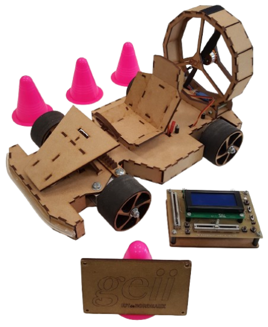

Projet
Kart à Hélice
Conception, fabrication et vérification d'un kart propulsé par hélice. Une exploration technique de l'électronique.
PROJET KART A HÉLICE
Électronique embarquée.
Contexte du Projet
Dans le cadre de ma première année de BUT, j'ai effectué un projet en équipe avec pour objectifs principaux :
- La conception électronique : concevoir, fabriquer et vérifier une carte émettrice et une carte réceptrice pour équiper un kart miniature.
- Le contrôle à distance : piloter le kart grâce à la télécommande infrarouge.
- La mobilisation de compétences : mise en pratique de l'électronique, de l'informatique embarquée, de la documentation technique et de la gestion de projet.
Objectifs Techniques
Équipe
Réaliser deux cartes électroniques (émetteur et récepteur).
Communication
Mettre en œuvre un système de communication infrarouge entre l’émetteur et le récepteur. Assurer la sécurité de fonctionnement (notamment en cas de perte de signal).
Exigences
Vérifier que toutes les exigences du cahier des charges sont respectées.
Conception
Le Microcontrôleur
Dans notre projet, le récepteur du kart avait pour mission de recevoir des trames infrarouges depuis l’émetteur, de les décoder, puis d’agir sur les commandes comme le moteur ou le klaxon, de la même manière qu'une télécommande de télévision. Pour cela, nous avions besoin d’un composant permettant de traiter les informations de la trame infrarouge, un microcontrôleur. Ce composant contenant notamment un processeur et de la mémoire, sera capable d’assurer :
- La lecture de signaux numériques
- Le décodage du protocole infrarouge
- Le traitement logique des données
- La sécurité en cas de perte de signal

Fabrication
Passage des cartes à l'insoleuse
Permet "d'imprimer" les pistes sur les cartes électroniques.
Passage à la graveuse
Le surplus de cuivre est enlevé des cartes ne laissant que les pistes ainsi que le plan de masse (et le texte).
Perçage de la carte
Trous pour les composants traversants et trous de fixation.
Vérification
Essais fonctionnels, mesure de conformité aux exigences, rédaction du dossier de vérification
Vérification & Tests
Notre équipe a réussi à concevoir des cartes électroniques fonctionnelles et conformes au cahier des charges.